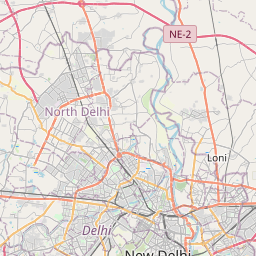
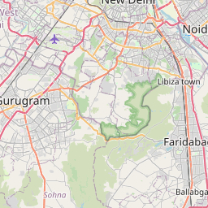
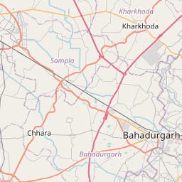
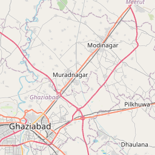
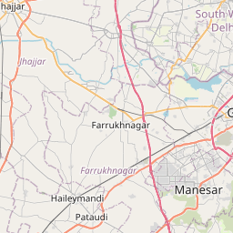
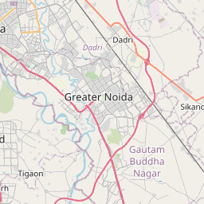
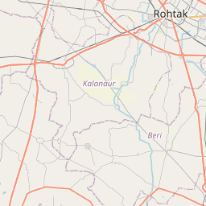
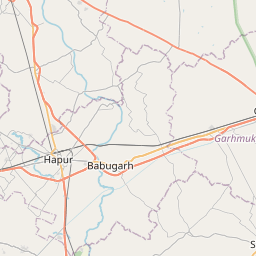
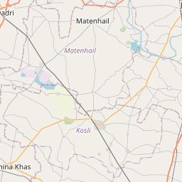
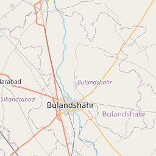

Civicसेतु
Crowdsourced civic reporting utilizes technology to create a direct link between citizens and authorities. Through apps, residents can instantly report local issues, providing real-time data that enables officials to resolve problems faster and more efficiently. This transparent process enhances government accountability and fosters a collaborative partnership for improving community infrastructure.
Report Issues Instantly
Easy Reporting
Report road issues instantly using your mobile device with GPS location and photo upload.
Fast Response
Automated ticketing system ensures quick response times and efficient resource allocation.
Transparency
Track progress in real-time and access analytics for long-term infrastructure improvement.
Recent Reports Map









